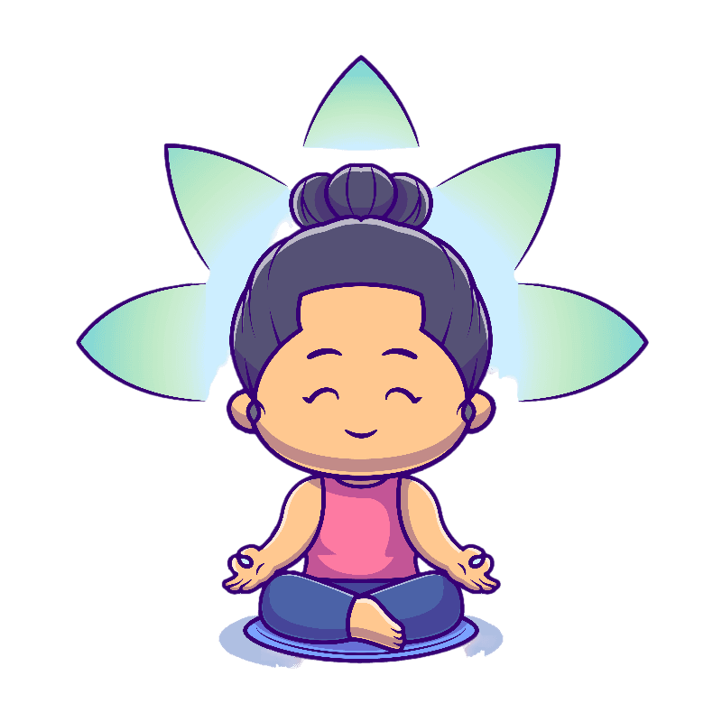

What is Mindfulness Measure?
A mindfulness measure is an assessment tool, often using self-report questionnaires like the Mindful Attention Awareness Scale (MAAS). Humans vary in attention and awareness to present events and experiences. The inherent capability differs in individuals due to levels of discipline, self-regulation, and personality.

How to Measure Mindfulness?
To determine your mindfulness level, you respond to questions honestly, reflecting on your present-moment awareness and experiences. Your score provides insight into your mindfulness, reflecting your level of awareness and presence in daily life. This can help you gauge your progress in developing mindfulness and identify areas for improvement in your practice.